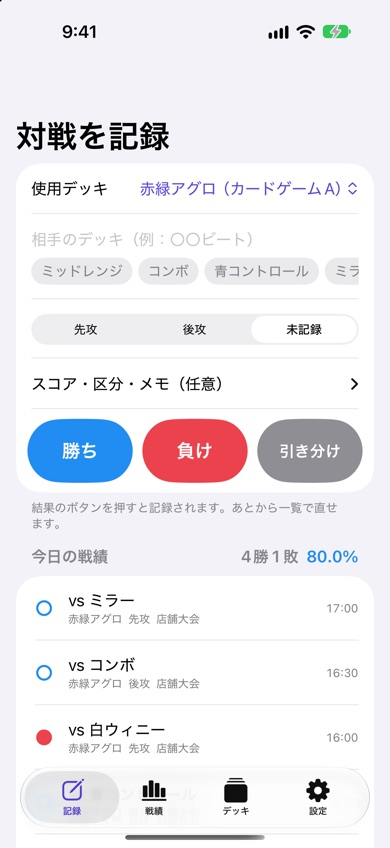
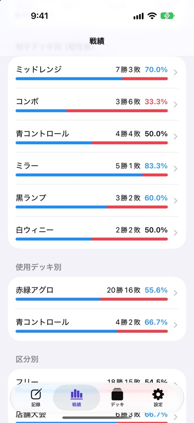

デッキ戦績ノート
カードゲームの対戦を記録して、勝率と相性を自動で集計するiPhoneアプリです。対戦が終わったら、相手のデッキと勝ち負けをタップするだけ。
iPhone・iPad（iOS 17以降）・無料（広告あり）


できること
- すばやく記録：相手のデッキはよく当たる順に候補が出るので、タップで選べます。スコア・大会名・メモも残せます。
- 勝率を自動で集計：期間（7日・30日・90日・すべて）、ゲーム、使用デッキで絞り込めます。
- 先攻・後攻の勝率：先攻と後攻でどれだけ勝率が変わるかがわかります。
- 相性表：相手デッキ別の勝敗と勝率を一覧に。苦手な相手がひと目でわかります。
- デッキの管理：デッキの写真、デッキコード（コピーできます）、メモを保存。使わなくなったデッキは別にまとめられます。
- シェアとCSV：今日の戦績を文章でシェア。全記録をCSVで書き出してExcelで分析できます。
こんな方に
- 店舗大会やフリー対戦の結果をメモ帳に書いている方
- デッキの調整のために、相手ごとの勝率を知りたい方
- いくつかのカードゲームを並行して遊んでいる方
よくある質問
どのカードゲームで使えますか
特定のゲームに限らず、1対1で勝ち負けがつくカードゲームなら使えます。デッキごとにゲーム名を入れておくと、ゲームごとに戦績を分けて見られます。
前のバージョンのデータは引き継がれますか
はい。アップデート後の初回起動時に、登録していたデッキと対戦成績を自動で取り込みます。前のバージョンでは対戦の日付が年月だけだったため、その月の1日の対戦として取り込みます。
記録をExcelで見られますか
「設定」→「戦績をCSVで書き出す」から、ExcelやGoogleスプレッドシートで開けるCSVファイルを書き出せます。
機種変更でデータは移りますか
iPhoneのバックアップから復元すれば移ります。データはこのアプリの中だけに保存され、外部のサーバーには送りません。
お問い合わせ
メール: tanacount.support@gmail.com
返信までお時間をいただく場合があります。
ほかのアプリ
アプリ一覧：麻雀の点数計算・成績表、証明写真・履歴書、補助金、棚卸のアプリ